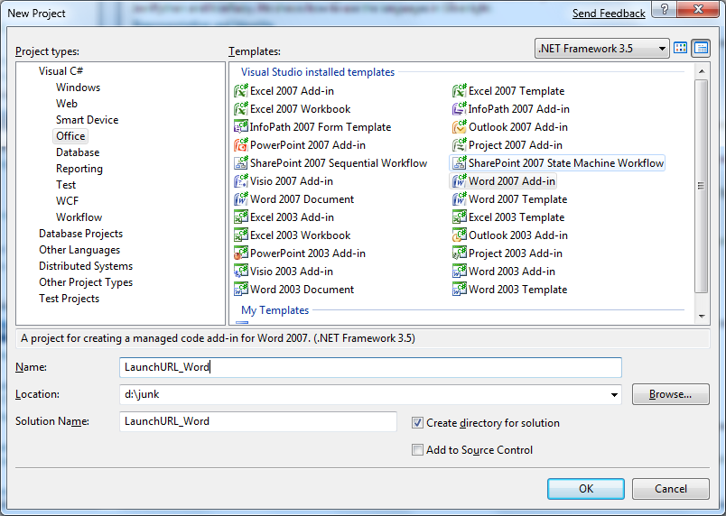
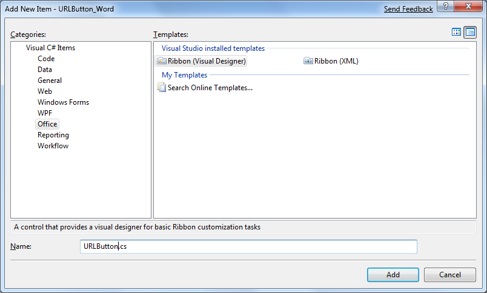
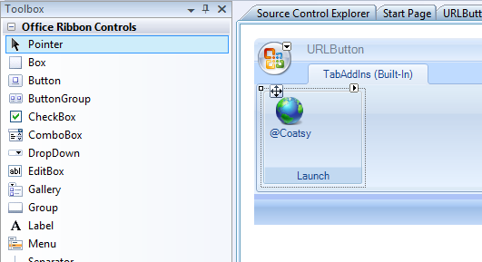

There was a question on one of the internal lists today: "Looking for a no-brainer way to demo just adding a simple button to Office that goes to a URL."
It’s going to work a little differently in Word & Excel than it does in Outlook.
Word/Excel/Etc (apps with Ribbon)
For a Word/Excel addin, add a ribbon control and then add a button to that control.
For example, create a new Word 2007 Addin

Add a ribbon control
 3
Change the caption of the Ribbon Group, drag a Button onto the group, change it’s image and caption etc

In the button click event use
System.Diagnostics.Process.Start(http://blogs.msdn.com/acoat);
Press F5 and look in the Addins tab in Word when it launches.
Click the button and the site launches in the system default browser.
Outlook
For Outlook of course, there’s no ribbon in the main app, so you need to add this code to the ThisAddIn_Startup event like Kirk Evans does it here to add the button:
public partial class ThisAddIn
{
Microsoft.Office.Core.CommandBar bar;
Microsoft.Office.Core.CommandBarButton button;
private void ThisAddIn_Startup(object sender, System.EventArgs e)
{
AddCommandBar();
AddCommandButton();
}
private void ThisAddIn_Shutdown(object sender, System.EventArgs e)
{
}
#region VSTO generated code
/// <summary>
/// Required method for Designer support - do not modify
/// the contents of this method with the code editor.
/// </summary>
private void InternalStartup()
{
this.Startup += new System.EventHandler(ThisAddIn_Startup);
this.Shutdown += new System.EventHandler(ThisAddIn_Shutdown);
}
#endregion
private void AddCommandBar()
{
//Add the command bar
bar = Globals.ThisAddIn.Application.ActiveExplorer().CommandBars.Add(
"Launch Site",
Office.MsoBarPosition.msoBarTop,
false,
true);
bar.Protection = Office.MsoBarProtection.msoBarNoCustomize;
bar.Visible = true;
}
private void AddCommandButton()
{
//Add a command button to the bar
button = bar.Controls.Add(
Office.MsoControlType.msoControlButton,
Type.Missing,
Type.Missing,
Type.Missing,
true) as Office.CommandBarButton;
button.Caption = "Launch the Site";
button.Click += new Office._CommandBarButtonEvents_ClickEventHandler(button_Click);
}
void button_Click(Office.CommandBarButton Ctrl, ref bool CancelDefault)
{
System.Diagnostics.Process.Start("http://blogs.msdn.com/acoat");
}
}
Pressing F5 here will launch Outlook and add a new CommandBar and a new button to that CommandBar.
{kind=link}
Clicking the button will launch the web site in the system default browser.